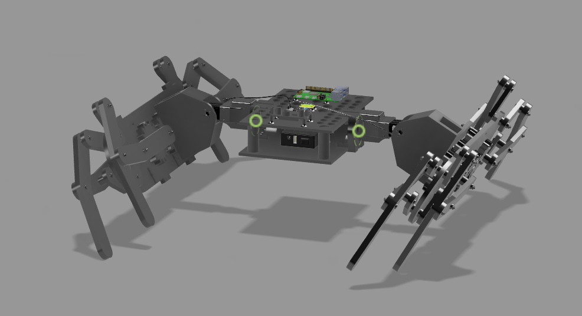
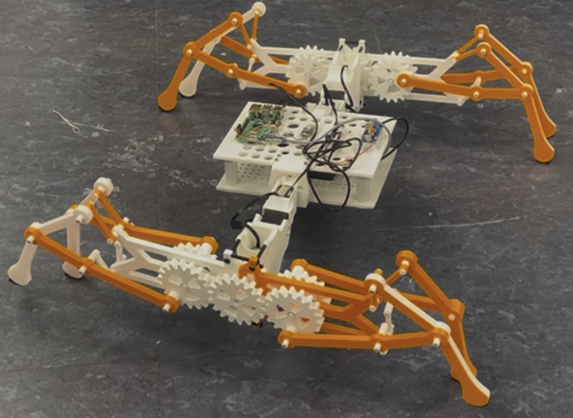
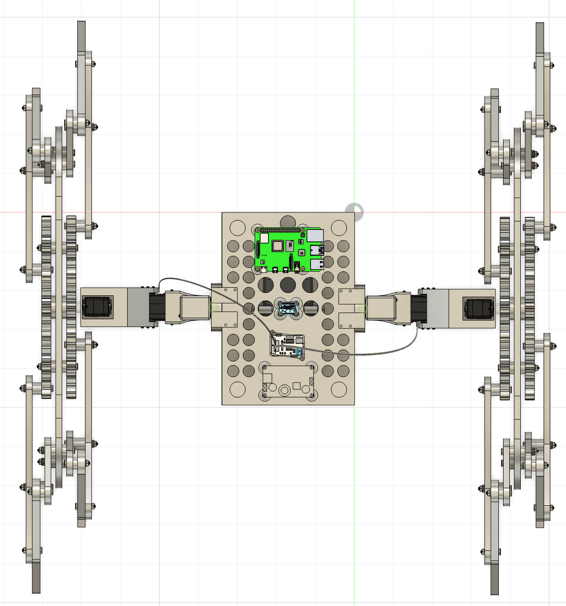

Built systems and implementation-heavy work from Columbia University — robotics, embedded systems, industrial automation, and applied machine learning.
Developed in Robotic Studio at Columbia University (Creative Machines Lab, Prof. Hod Lipson). Working from a servo kit and open design brief, the project produced a spider-inspired 8-legged crawling robot using a Klann linkage mechanism. Two actuated arms drive the full 8-legged structure. Designed in Fusion 360, fabricated on a Bambu Lab printer with a 0.4 mm nozzle.
Two full redesign cycles completed: the first addressed material distribution and joint tolerances; the second resolved mechanical binding from unavailable ideal fastener sizes. Final joint tolerances: 0.4–0.8 mm. Electronics soldered and integrated throughout.



Course project for Introduction to Robotics (RoAR Lab, Prof. Sunil K. Agrawal). Focused on enabling a 7-DOF Franka Emika Panda arm to navigate safely in constrained, cluttered workspaces motivated by laboratory chemical-handling scenarios.
Two control architectures compared in Genesis physics engine simulations with stochastic obstacles: an IK solver with geometric via-point, and a Jacobian-based velocity controller with real-time link-wise avoidance. The Jacobian approach consistently achieved higher success rates, smoother trajectories, and lower sensitivity to obstacle placement.
Ongoing rover project at Columbia University's Stark Lab, supervised by Prof. Evan Lerner. Building a complete mobile platform from scratch integrating mechanical, electrical, and control subsystems. Ackermann steering with DC motors and encoders, 50 Hz closed-loop control on RP2040. Motor current spikes (3–5 A) caused voltage drops and resets — resolved with 2200 µF decoupling capacitors, isolated power rails (11.1 V → 5 V for Pi / 6 V for servos), common ground architecture, and correctly sized wire gauges.
Final project for Reinforcement Learning at Columbia University (Prof. Shipra Agrawal), in collaboration with FoodWeb.ai. Developed a PPO agent with DeepSets architecture for perishable inventory management across multiple restaurants under budget and capacity constraints. Policy integrated LSTM-based demand forecasts and LogNormal action distributions. Achieved 77% spoilage reduction vs. heuristic baselines in simulation.
Final project for Industrial Automation at Columbia University (Prof. Ali Dadgar). Integrated a 3D-printed conveyor belt with a multi-stage sensing pipeline. An ultrasonic sensor triggered servo ejection of oversized objects; an overhead camera fed a trained vision model on Raspberry Pi to classify items into recyclable, compost, or non-recyclable categories. A rail-mounted bin system aligned outputs accordingly.